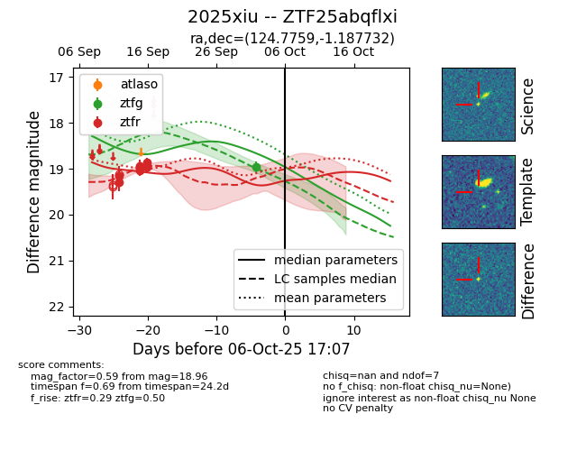

FINK: ZTF25abqflxi
Lasair: ZTF25abqflxi
ALeRCE: ZTF25abqflxi
TNS: 2025xiu
YSE: 2025xiu
ZTF25abqflxi (ztf,fink)
2025xiu (tns,yse)
equatorial (ra, dec) = (124.7759,-1.18773)
galactic (l, b) = (224.4260,+18.82435)

last ztfr=18.96
8 ztfr detections